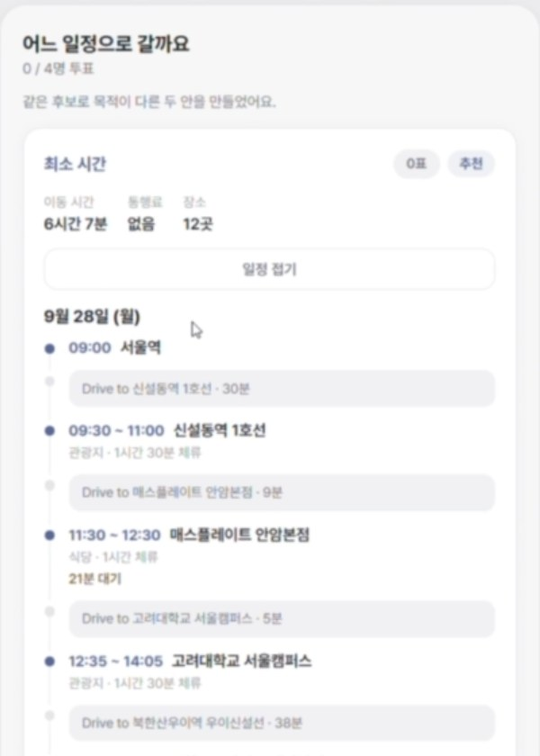

SyncTrip
그룹이 가고 싶은 장소에 순위를 매기면, 영업시간과 예약 시간을 지키는 가장 빠른 동선과 가장 저렴한 동선을 만들고 투표로 확정하는 여행 플래너.

풀려던 문제
단톡방에는 장소 링크만 쌓이고, 의견을 모아 일정을 확정하기 어렵습니다. 기존 여행 앱은 거리순 정렬만 해서 “18시 식당 예약”, “17시 미술관 마감” 같은 시간 제약을 반영하지 못하고, 대중교통 노선은 따로 찾아야 했습니다.
대상은 MT나 우정 여행을 기획하는 대학생·2030 그룹입니다.
할 수 있는 것
- 로그인 없이 방을 만들고 입장, 1명부터 12명까지
- 장소 제안은 무제한, 멤버마다 상위 3곳에 순위
- 영업시간, 필수 방문, 체류 시간, 방문 시간대는 누구나 수정
- 출발지·도착지·숙소 지정, 숙소는 박마다 추가
- 설정 → 장소 모으기 → 분석 → 투표 → 확정
- 멤버의 변경이 실시간으로 바로 반영
Two-Track 경로 계산
투표는 Borda 방식으로 점수를 매겨 방문 후보를 고르고, 날짜별로 나눕니다. Track 1은 API 호출 없이 거리와 속도로 가능한 모든 방문 순서를 시뮬레이션해 영업시간과 예약을 지키는 후보만 남깁니다. Track 2는 남은 후보에만 카카오 모빌리티와 ODsay를 불러 실제 이동 시간과 요금으로 다시 검증합니다. 일정이 충돌하면 어디서, 왜 충돌하는지 짚어 줍니다.